Produções · Capítulo de Livro
Capítulos de livro publicados
Clique em um card para abrir o capítulo completo em PDF, em uma nova aba.
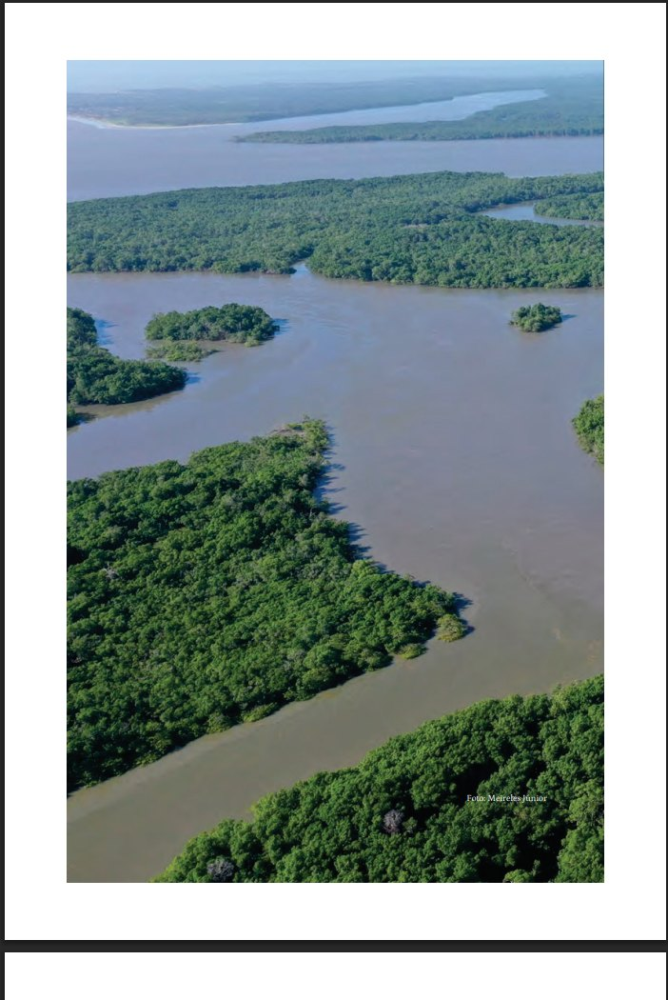
Diagnóstico da pesca amadora no estado do Maranhão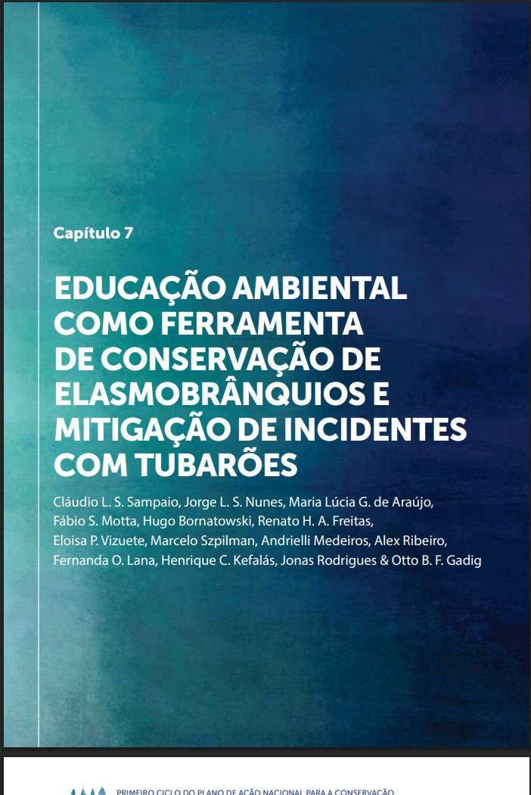
Educação ambiental como ferramenta de conservação de elasmobrânquios e mitigação de incidentes com tubarões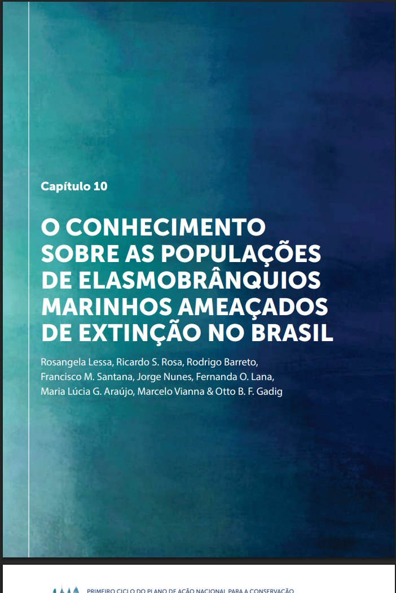
O conhecimento sobre as populações de elasmobrânquios marinhos ameaçados de extinção no Brasil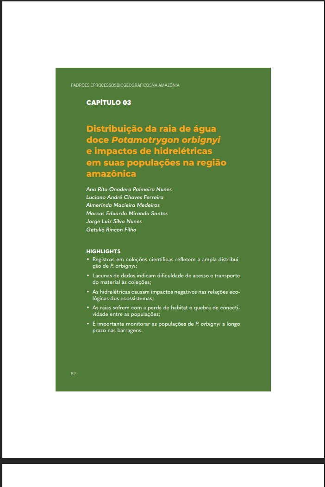
Distribuição da raia de água doce Potamotrygon orbignyi e impactos de hidrelétricas em suas populações na região amazônica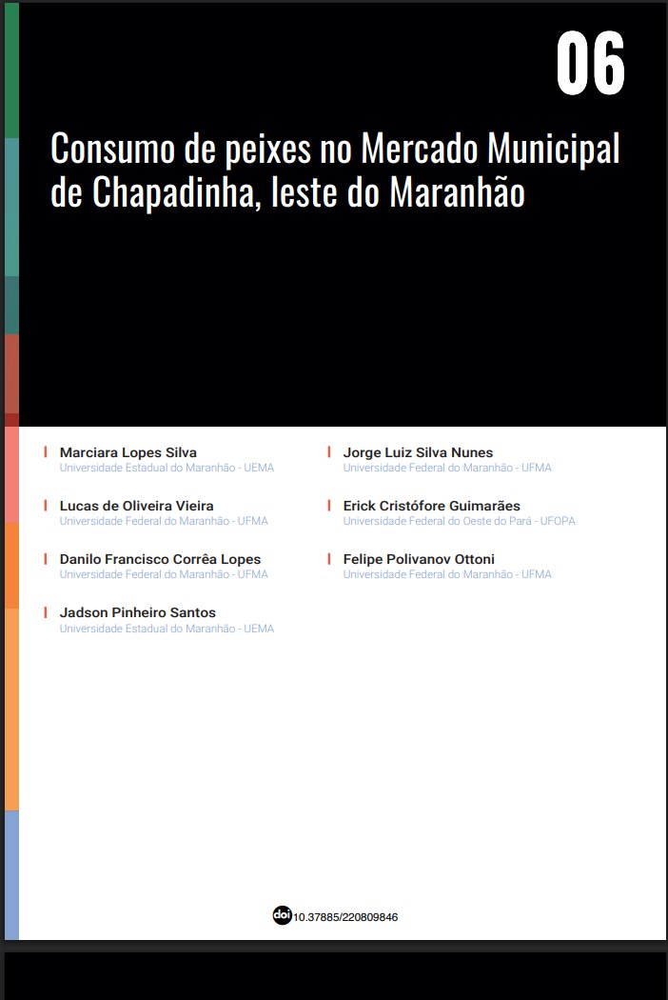
Consumo de peixes no Mercado Municipal de Chapadinha, leste do Maranhão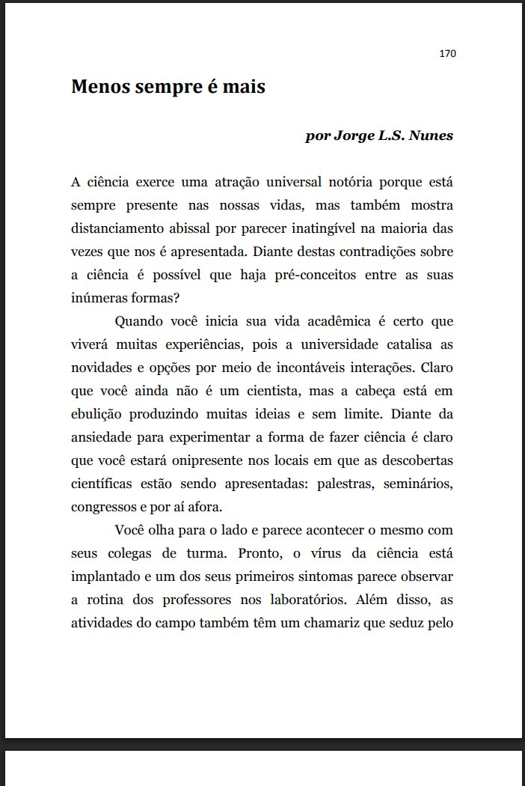
Menos sempre é mais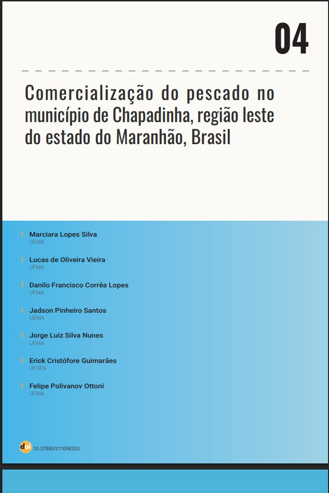
Comercialização do pescado no município de Chapadinha, região leste do estado do Maranhão, Brasil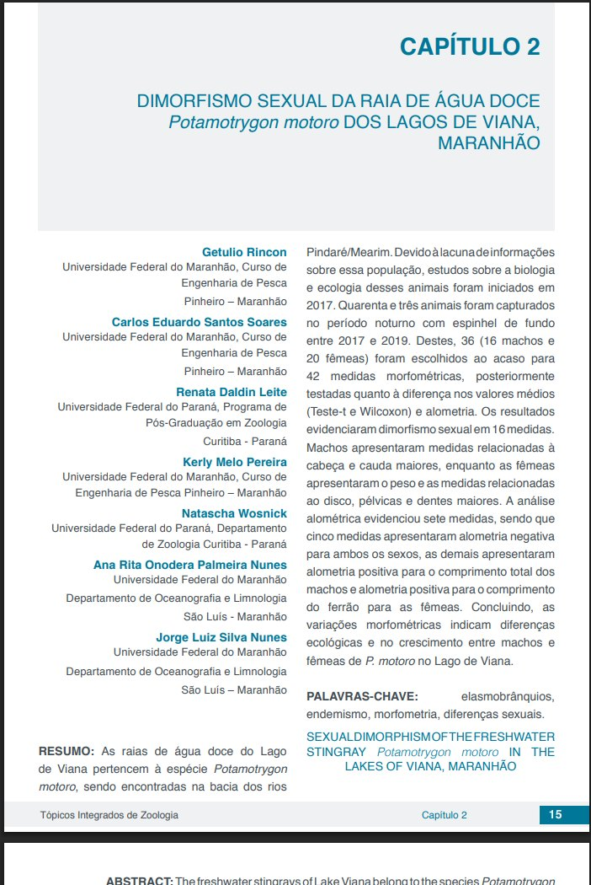
Dimorfismo sexual da raia de água doce Potamotrygon motoro dos lagos de Viana, Maranhão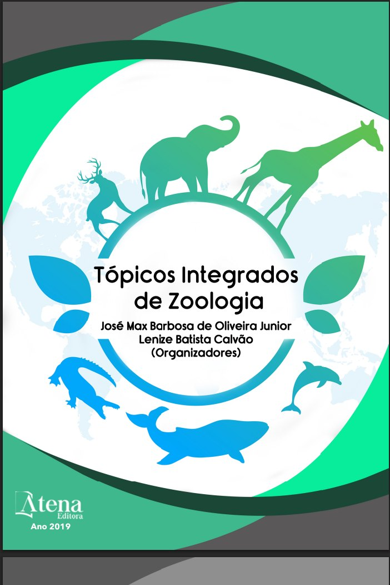
Acidentes causados por raias em pescadores artesanais Revisão sobre a diversidade, ameaças e conservação dos elasmobrânquios do Maranhão
Revisão sobre a diversidade, ameaças e conservação dos elasmobrânquios do Maranhão
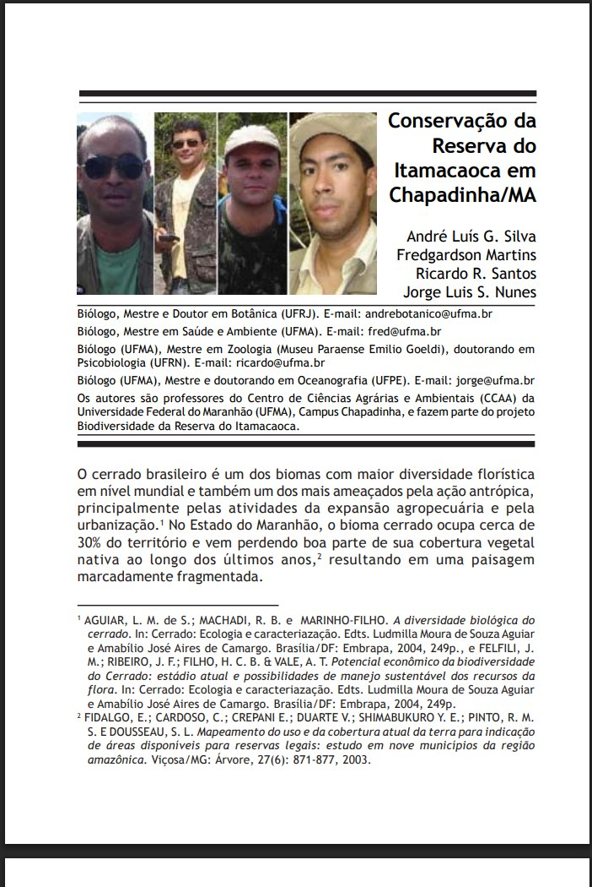
Conservação da Reserva do Itamacaoca em Chapadinha/MA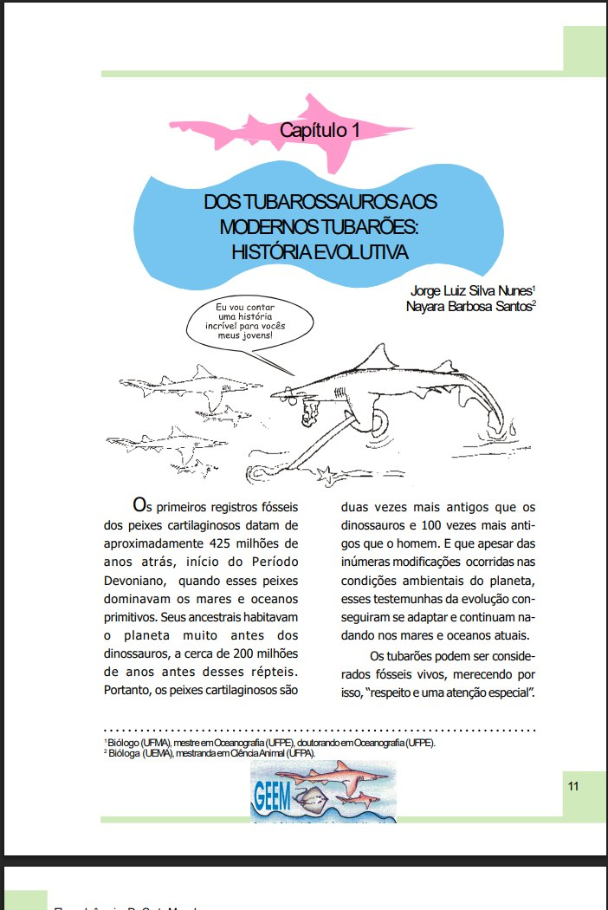
Dos Tubarossauros aos modernos tubarões: história evolutiva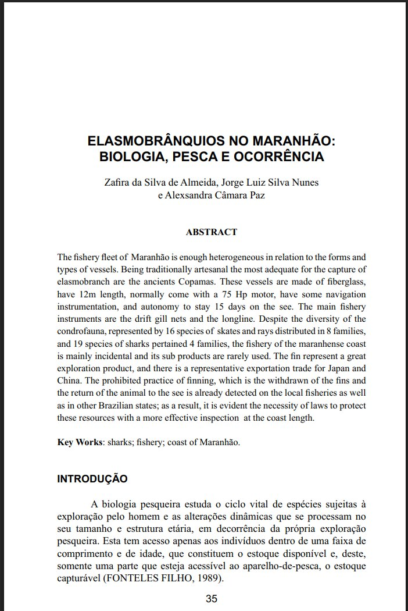
Elasmobrânquios no Maranhão: biologia, pesca e ocorrência